Menu
Hersenen en zintuigen1e Toetsmoment 2020‑2021
Examen inleveren
Weet je zeker dat je het examen afsluit?
Examen resetten
Al je antwoorden worden gewist en je begint opnieuw. Weet je het zeker?
Jouw resultaten
Hersenen en zintuigen · 1e Toetsmoment 2020‑2021
—
/ 61
0
Goed
0
Fout
0
Niet beantwoord
Vraag 1
Welke van de in de afbeelding aangegeven structuren worden gerekend tot het binnenoor? Kies alle juiste antwoorden.
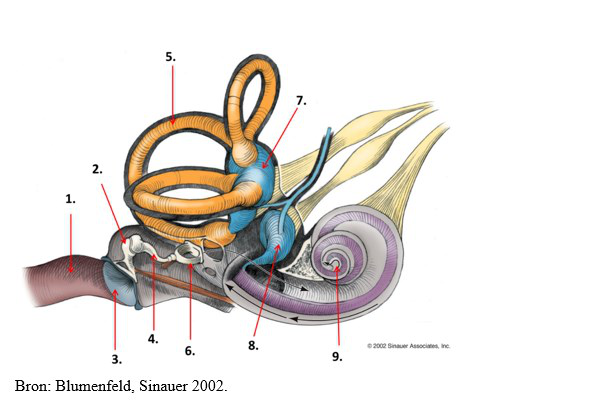
Meerdere antwoorden mogelijk.
Vraag 2
Bij een patiënt wordt het gehoor onderzocht d.m.v. audiometrie. Er wordt een audiogram gemaakt met een hoofdtelefoon (luchtgeleidingsaudiogram) en met een botvibrator (beengeleidingsaudiogram). Beide audiogrammen laten eenzelfde gehoorverlies zien. Welke diagnose is hiermee in overeenstemming?
Vraag 3
Wanneer je vrij snel van hoogte verandert (bv. in een vliegtuig dat opstijgt), zonder dat de buis van Eustachius geopend wordt, zal dit leiden tot een (tijdelijk) gehoorverlies. Wat is hiervan de oorzaak?
Vraag 4
Waarin verschilt de samenstelling van de extracellulaire vloeistof in de ductus cochlearis (endolymfe) van de extracellulaire vloeistof op de meeste andere locaties in het lichaam?
Vraag 5
Bij de draaistoelproef tijdens het practicum fysiologie wordt een student, zittend op een stoel, rondgedraaid met een toenemende snelheid. Op welke manier wordt deze versnelling waargenomen door receptorcellen van het vestibulaire systeem?
Vraag 6
Met welke zaken moet rekening gehouden worden bij een baby/kind met een aangeboren doofheid?
Vraag 7
Hoe noemen we met de pijl aangegeven structuur?
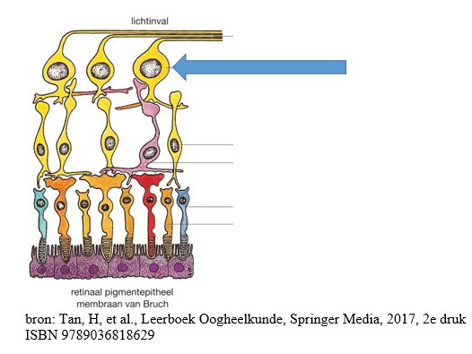
Vraag 8
Bij oogheelkundig onderzoek meet u een visus op van 1/60. Wat is de visus van de patiënt?
Vraag 9
Een arts onderzoekt de oogstand van een patiënt door deze naar een lampje te laten kijken en de reflexbeeldjes te beoordelen. Op basis hiervan concludeert de arts dat de oogstand recht is. Vervolgens wordt de proef van Maddox uitgevoerd. De patiënt ziet de verticale rode streep ver naar links in het assenkruis als het rode Maddoxglas voor het linkeroog wordt gehouden, en ver naar rechts in het assenkruis als het glas voor het rechteroog wordt gehouden. Wat kan op basis hiervan geconcludeerd worden?
Vraag 10
Kies de juiste alternatieven.
Kies de juiste alternatieven. Bij myopie wordt bij het kijken naar een object in de verte, een beeld geprojecteerd de retina (t.o.v. de invalsrichting van het licht). Dit kan gecorrigeerd worden met een lens.
Vraag 11
Het deel van de retina dat de grootste gezichtsscherpte geeft, is de fovea centralis. Wat is één van de redenen hiervoor?
Vraag 12
In de retina bestaan receptieve velden: een organisatievorm van fotoreceptoren, bipolaire cellen en ganglioncellen, waarbij het effect van een lichtprikkel op de actiepotentiaalfrequentie anders is wanneer deze op het centrum van het veld valt dan in op de periferie van het receptieve veld. Wat is de functie van deze receptieve velden?
Vraag 13
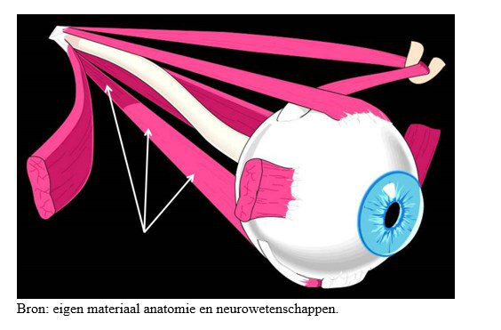
Kies de juiste alternatieven.
De afbeelding laat een bulbus oculi zien met de extrinsieke oogspieren. Vul de volgende twee beweringen juist aan: Dit is een oog. De met pijlen aangeduide spier is de musculus rectus .
Vraag 14
Oog - accommodatievermogen. Wat is wat? Koppel elke beschrijving aan de juiste term.
Sleep een optie naar de bijbehorende rij, of tik eerst op een kaart en dan op een rij.
Men kan, zonder te accommoderen, in de verte scherp zien
Sleep hier naartoe
Voorwerpen dichtbij ziet men scherp, maar voorwerpen in de verte ziet men wazig
Sleep hier naartoe
Bij kijken naar voorwerpen in de verte, dient men te accommoderen om scherp te kunnen zien (vaak hoofdpijn als eerste klacht)
Sleep hier naartoe
Ouderdomsverschijnsel waarbij het accommodatievermogen minder wordt door stijver worden van de ooglens
Sleep hier naartoe
Vraag 15
Welke cellen in het perifere zenuwstelsel produceren myeline?
Vraag 16
Welke cellen bekleden de wanden van de hersenventrikels?
Vraag 17
Een man van 70 jaar loopt op straat en wordt plotseling erg draaierig. Hij vertelt dat het lijkt alsof de wereld om hem heen draait. Als hij weer gaat lopen neigt hij steeds naar links te vallen. Hij moet ook steeds overgeven omdat hij zo misselijk is. Hij heeft dit nooit eerder ervaren. Voorgeschiedenis: diabetes mellitus type II. Wat is op dit moment de meest waarschijnlijke diagnose?
Vraag 18
Een vrouw van 29 jaar komt bij de huisarts. Ze klaagt over gehoorverlies aan het linkeroor. Het is ontstaan na een periode waarin ze erg verkouden was. Nog steeds is ze aan het snotteren. Bij otoscopie ziet de huisarts links luchtbellen achter het trommelvlies. Rechts ziet hij een grijs-glanzend trommelvlies. De huisarts vermoedt een geleidingsdoofheid links en voert de stemvorkproeven uit. Welk resultaat zal de stemvorkproef van Weber opleveren? De Weber lateraliseert naar:
Vraag 19
Patiënt A. is al jaren aan beide oren slechthorend. Hij komt op consult bij zijn huisarts vanwege aanhoudende kniepijn. De huisarts dient in het consult met patiënt A. rekening te houden met een aantal punten om er voor te zorgen dat de patiënt hem goed verstaat en begrijpt. Geef aan welke drie punten de huisarts dient na te streven:
Meerdere antwoorden mogelijk.
Vraag 20
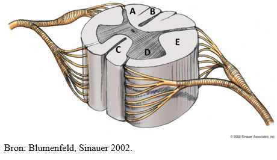
Kies de juiste alternatieven.
Tractus corticospinalis (piramidebaan) bestaat uit een gekruist en een niet-gekruist deel. Wat bevindt zich waar in deze afbeelding van het ruggenmerg? Tractus corticospinalis gekruiste deel: . Tractus corticospinalis niet-gekruiste deel: .
Vraag 21
Kies de juiste alternatieven.
Twee cowboys kregen ruzie bij het pokeren. Bij het duel dat erop volgde schoot de één de ander in zijn buik. Hierbij werd het ruggenmerg voor de helft geraakt (hemi-sectie ter hoogte van Th10). Wat zijn de gevolgen voor vitale en gnostische functies van de benen? De vitale uitval is (ten opzichte van de laesie): afwezig. De gnostische uitval is (ten opzichte van de laesie): afwezig.
Vraag 22
Syringomyelie is een pathologische verwijding van het centrale kanaal. Wanneer dit op cervicaal niveau plaatsvindt, zijn de onderstaande symptomen te verwachten met betrekking tot de armfunctie:
Vraag 23
Neurale buisdefecten zijn het gevolg van een probleem met de vorming van de neurale buis tijdens de eerste 28 dagen na de conceptie. Het niveau van de spina bifida bepaalt de neurologische tekorten. Welke neurologische symptomen zijn bij een baby met een myelomeningocele gerelateerd aan uitval op zenuwwortel niveau van L4. Kies drie juiste antwoorden.
Meerdere antwoorden mogelijk.
Vraag 24
Naast het goed functioneren van het vestibulaire systeem, wordt de evenwichtszin ook bepaald door:
Vraag 25
Welke veneuze sinussen bevinden zich in de falx cerebri? Kies twee juiste antwoorden.
Meerdere antwoorden mogelijk.
Vraag 26
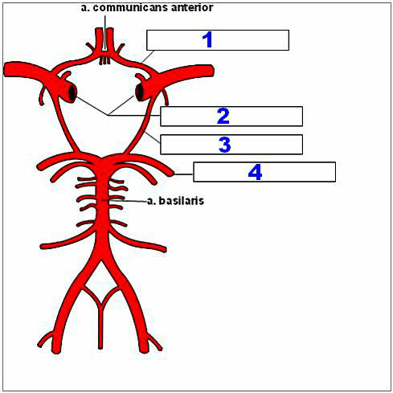
Cirkel van Willis. De cirkel van Willis is een stelsel van arteriën aan de basale zijde van de hersenen. Hierdoor worden anastomosen gevormd tussen de grote cerebrale arteriën die de hersenen van bloed voorzien. Koppel de namen van de arteriën aan het juiste nummer.
Sleep een optie naar de bijbehorende rij, of tik eerst op een kaart en dan op een rij.
Nummer 1
Sleep hier naartoe
Nummer 2
Sleep hier naartoe
Nummer 3
Sleep hier naartoe
Nummer 4
Sleep hier naartoe
Vraag 27
Een patiënt presenteert zich met plotselinge uitval van het rechter gezichtsveld. Wat is de meest waarschijnlijke diagnose?
Vraag 28
Een man van 40 presenteert zich met plotselinge hoofdpijn. Bij presentatie op de SEH is hij helder maar heeft een hoge bloeddruk. Er wordt een CT-scan gemaakt, zie afbeelding. Wat is uw diagnose?
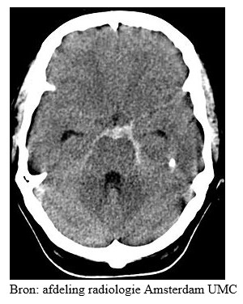
Vraag 29
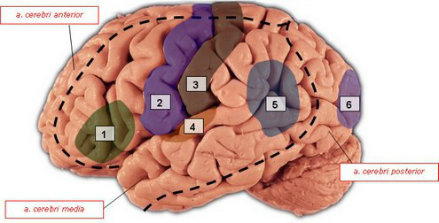
Cortexgebieden. De stroomgebieden van de a. cerebri posterior, a. cerebri media en a. cerebri anterior zijn van elkaar gescheiden door de zwarte onderbroken lijn. Wat is wat? Koppel elk nummer aan de juiste structuur.
Sleep een optie naar de bijbehorende rij, of tik eerst op een kaart en dan op een rij.
Nummer 1
Sleep hier naartoe
Nummer 2
Sleep hier naartoe
Nummer 3
Sleep hier naartoe
Nummer 4
Sleep hier naartoe
Nummer 5
Sleep hier naartoe
Nummer 6
Sleep hier naartoe
Vraag 30
Verschillende cerebrale cortex gebieden zijn via associatie vezels met elkaar verbonden. Welke twee gebieden verbindt de fasciculus uncinatus met elkaar?
Meerdere antwoorden mogelijk.
Vraag 31
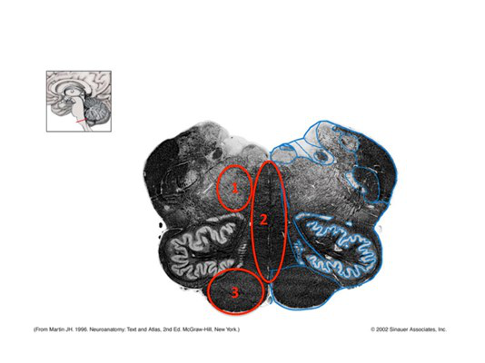
Kies de juiste alternatieven.
Met welke structuren corresponderen de nummers in deze doorsnede van het myelencephalon? Nummer 1: . Nummer 2: . Nummer 3: .
Vraag 32
Celgroepen in de reticulaire formatie ('ARAS') kunnen de volgende neurotransmitters in de hogere hersengebieden afgeven:
Vraag 33
Hersenzenuwen en hun functies. Welke hersenzenuw hoort primair bij welke functie? Koppel elke hersenzenuw aan de juiste functie.
Sleep een optie naar de bijbehorende rij, of tik eerst op een kaart en dan op een rij.
II: n. opticus
Sleep hier naartoe
V: n. trigeminus
Sleep hier naartoe
VII: n. facialis
Sleep hier naartoe
VIII: n. vestibulocochlearis
Sleep hier naartoe
XII: n. hypoglossus
Sleep hier naartoe
Vraag 34
Van welk bloedvat takken de lenticulostriatale arteriën af?
Vraag 35
Welke hersenzenuw wordt aangegeven met de rode pijl?
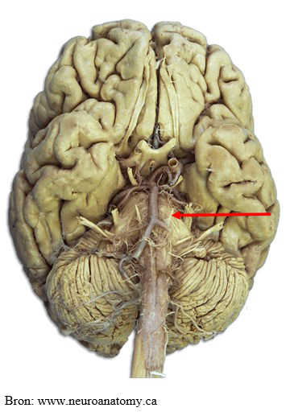
Vraag 36
Een patiënt bezoekt de arts met dubbelzien. Bij de anamnese blijkt er sprake te zijn van verticale dubbelbeelden. Bij uitval van welke hersenzenuw past dit anamnestische gegeven het beste?
Vraag 37
Een patiënte heeft sinds een dag een hangend ooglid rechts. Als u het ooglid met een vinger optilt ziet u dat de pupil aan die zijde wijder is dan links. Over welke andere klacht zal de patiënt klagen nadat u het ooglid hebt opgetild?
Vraag 38
Je ziet hier foto's van een persoon met een centrale oorzaak van een halfzijde uitval van de aangezichtsspieren en een persoon met een perifere oorzaak. Bij welke persoon is er sprake van een perifere oorzaak van de uitval?
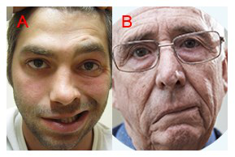
Vraag 39
Een patiënt bezoekt de spoedeisende hulp nadat hij die dag ontwaakte met een zwakte van aangezichtsspieren links. Bij onderzoek blijkt de patiënt aan de linkerzijde van de tong minder goed zout en zuur te kunnen proeven. Waar moet deze combinatie van verschijnselen gelokaliseerd worden?
Vraag 40
De CT-scan laat een hyperintensiteit zien tussen het bot en de hemisfeer. Bij welk type bloeding past dit beeld?
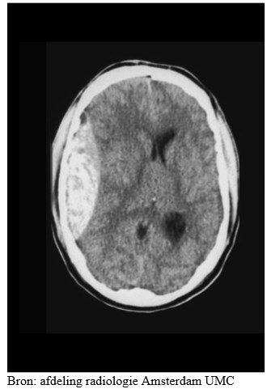
Vraag 41
De afbeeldingen tonen een sterke volumetoename van de laterale ventrikels. Er is hier sprake van een hydrocephalus. Waar bevindt zich de oorzaak van dit probleem? In de…
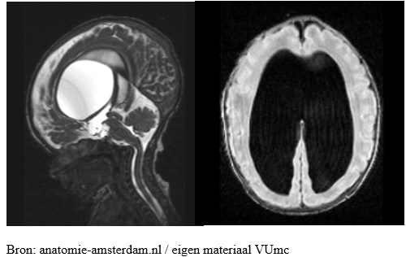
Vraag 42
De afbeelding illustreert een spinale zenuwwortelcompressie van bovenaf gezien bij een patiënt na het scheuren van een tussenwervelschijf op lumbaal niveau. Waar voelt deze persoon pijn of gevoelloosheid?
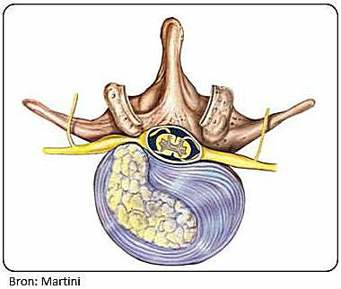
Vraag 43
Bij de ontwikkeling van de hersenen vormen zich in het embryonale stadium vijf hersenblaasjes. Uit welk hersenenblaasje komt het cerebellum voort?
Vraag 44
Met welk nummer wordt de substantia nigra aangeduid?
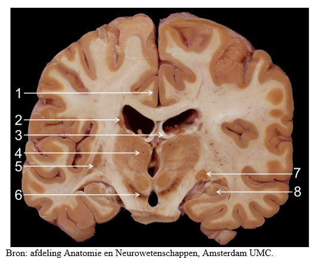
Vraag 45
Welke van de drie cerebellaire pedunkels is anatomisch gezien het meest verbonden met de pons?
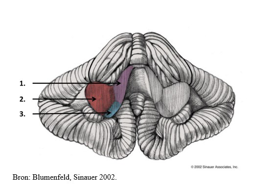
Vraag 46
Is in deze coronale doorsnede van de hersenen de thalamus zichtbaar?
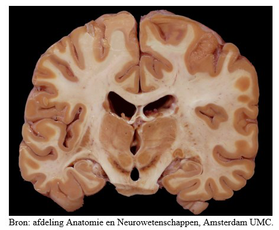
Vraag 47
Welke structuur, behorende tot de basale ganglia, ontvangt directe projecties uit alle delen van de cerebrale cortex?
Vraag 48
Bij de evaluatie van interne stimuli op emotionele betekenis speelt de amygdala een belangrijke rol. Via welke twee hersengebieden worden deze interne prikkels aangevoerd naar de amygdala?
Meerdere antwoorden mogelijk.
Vraag 49
Welke van onderstaande mogelijkheden worden tot het non-declaratieve (impliciete) geheugen gerekend? Kies twee goede antwoorden.
Meerdere antwoorden mogelijk.
Vraag 50
De hogere orde verwerking van visuele informatie met betrekking tot beweging en ruimtelijke relaties vindt voornamelijk plaats via:
Vraag 51
Een 75-jarige vrouw, bekend met schizofrenie van het paranoïde type, wordt opgenomen op de afdeling algemene interne geneeskunde vanwege een exacerbatie COPD. Er is sprake van koorts en benauwdheid, in het laboratorium is er sprake van verhoogde infectieparameters. De verpleegkundige vertelt dat patiënte onrustig en motorisch hyperactief is. Zij trekt infusen, lijnen en de zuurstofsonde uit, en is hierin niet te corrigeren. Bij onderzoek zie je een patiënte die in eerste instantie helder lijkt, maar moeite heeft om haar aandacht vast te houden. Er is sprake van verwardheid. Tevens zijn er aanwijzingen voor visuele hallucinaties (patiënte volgt met haar ogen "dingen" op het plafond). Welk symptoom in deze casus levert de belangrijkste aanwijzing dat er, naast de al langer bestaande aandoening schizofrenie, ook sprake is van een delier?
Vraag 52
Wat is het verschil tussen een angststoornis en een depressieve stoornis?
Vraag 53
De heer V. (90 jaar) woont nog zelfstandig en kan nog redelijk autonoom functioneren. Zo nu en dan komt hij ter controle bij zijn huisarts. Tijdens een van deze controles probeert de huisarts een functionele beoordeling van de IADL-schaal te maken van de heer V. Welke drie activiteiten zullen mogelijk ter sprake komen bij het bespreken van de IADL-schaal?
Meerdere antwoorden mogelijk.
Vraag 54
De heer V. (90 jaar) woont nog zelfstandig en kan nog redelijk autonoom functioneren. Hij vertelt over de activiteiten die hij nog zelfstandig kan uitvoeren, echter op zo'n warrige manier dat de huisarts het verhaal niet goed meer kan volgen. De huisarts besluit vervolgens een volledige 'ik boodschap' te geven met als doel het verhaal van de patiënt wat meer te structureren. Hoeveel stappen telt een volledige 'ik-boodschap'?
Vraag 55
Je ziet hier een doorsnede door het cerebellum. Welke cellen of structuren maken voornamelijk onderdeel uit van de donkerblauw gekleurde laag die weergegeven wordt met de witte pijl?
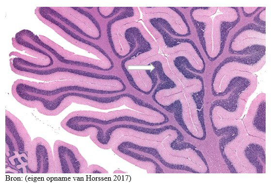
Vraag 56
Bij een fobie heeft de patiënt last van:
Vraag 57
Een 85-jarige vrouw wordt opgenomen op de afdeling interne geneeskunde vanwege een urineweginfectie. Zij is bekend met de ziekte van Parkinson en dementie. Op de afdeling is zij verward, gedesoriënteerd in tijd en plaats, en onrustig. De verpleegkundige vertelt dat de symptomen wisselen in de loop van de dag. Welk klinisch gegeven levert de belangrijkste aanwijzing dat er, naast de dementie, ook sprake is van een delier?
Vraag 58
Een patiënt heeft 1 week terug een neuritis vestibulair links doorgemaakt. Welke nystagmus kan daarbij passen?
Vraag 59
De semicirculaire kanalen meten hoekversnellingen. Welke kanalen worden gestimuleerd bij de test van Dix Hallpike met het hoofd 45 graden naar rechts gedraaid?
Vraag 60
Deze CT-scan met contrast laat een brughoektumor zien (pijl). Welke hersenzenuw is het meest waarschijnlijk aangedaan?
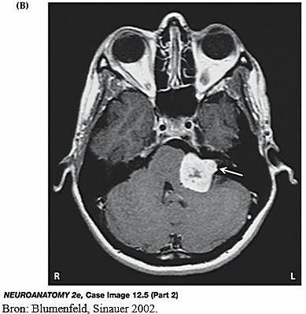
Vraag 61
Wat is een belangrijke factor die de afnemende incidentie in spina bifida, zie figuur, beïnvloedde in de periode 1975-1985?